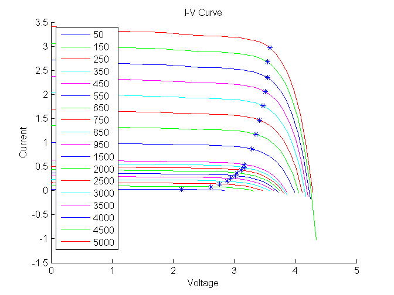
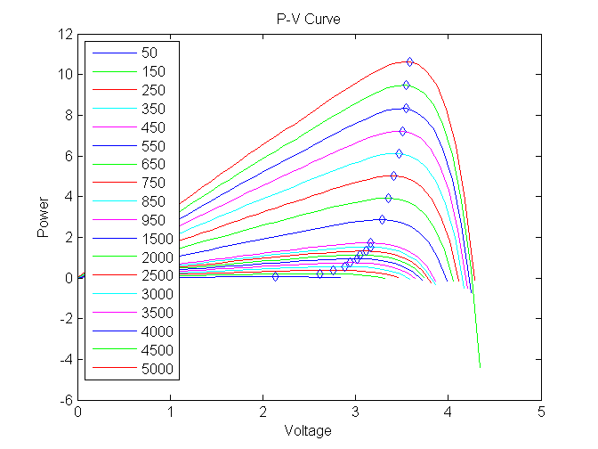
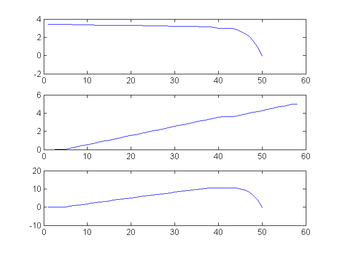
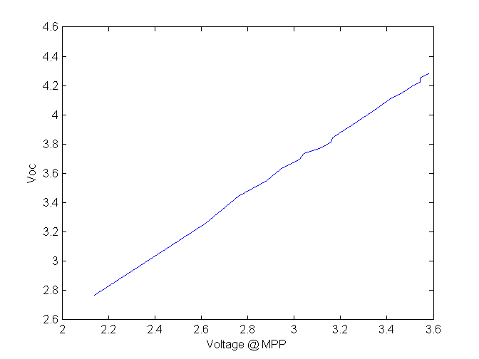

Contents
Script to autogenerate IV and PV curves for multiple lux values
Initialize variables
clf Illuminance_1= 50:100:1000; % step size 100 Illuminance_2= 1500:500:5000; % step size 500 Illuminance_used = [Illuminance_1'; Illuminance_2']; lux_vals=size(Illuminance_used) plot_vi = zeros(1,lux_vals(1,1)); plot_vp = zeros(1,lux_vals(1,1)); MPPT = zeros(lux_vals(1,1),4); colour = ['b','g','r','c','m','k']; colour_index=1; % M=double(Illuminance_used); %M={'Lux=100','200','300','400','500','600','700','100','200','300','400','500','600','700','100','200','300','400'}; load_system('my_model');
lux_vals =
18 1
run the script for all the Lux values
for i=1:1:lux_vals(1,1) lux_ws(:,1)=i; lux_ws(:,2) = Illuminance_used(i); simOut = sim('my_model');%%('my_model','SaveOutput','on'); %results= zeros([10000,3]); %results = simOut.get( 'yout' ); %block to compute Index at Max power Point, and record V,I and P at MPP [MPPT_p,Index] = max(Simulation_out.signals(3).values); MPPT(i,1) =Simulation_out.signals(1).values(Index); % Current @ MPP for that perticular LUX {i} value MPPT(i,2) =Simulation_out.signals(2).values(Index); % Voltage @ MPP for that perticular LUX {i} value MPPT(i,3) =Simulation_out.signals(3).values(Index); % Power @ MPP for that perticular LUX {i} value MPPT(i,4)= V_oc(2); %MPPT(i,1) = results(Index,1); %MPPT(i,2) = results(Index,2); %MPPT(i,3) = results(Index,3); figure(1) hold all plot_vi(i)=plot(Simulation_out.signals(2).values,Simulation_out.signals(1).values,'Color',colour(colour_index), 'DisplayName', sprintf('%d',Illuminance_used(i))); % plot of I vs V %%plot(results(:,2),results(:,1),'Color',colour(i)) legend(plot_vi,'Location','NorthWest'); % Set DisplayNames for the lines for use by the legend xlabel('Voltage'); ylabel('Current'); title('I-V Curve'); %%'Location','BestOutside'); figure(2) plot_vp(i)=plot(Simulation_out.signals(2).values,Simulation_out.signals(3).values,'Color',colour(colour_index),'DisplayName',sprintf('%d',Illuminance_used(i))); % plot of P vs V legend(plot_vp,'Location','NorthWest'); %%plot(results(:,2),results(:,3),'Color',colour(i)) hold on xlabel('Voltage'); ylabel('Power'); title('P-V Curve'); colour_index=colour_index+1; if colour_index == 6 colour_index=1; end end %%Plot the Max power point onto the graphs figure(1) plot(MPPT(:,2),MPPT(:,1),'b*');%,'Color','b'); figure(2) plot(MPPT(:,2),MPPT(:,3),'bd');
Warning: Using a default value of 0.4 for maximum step size. The simulation step size will be equal to or less than this value. You can disable this diagnostic by setting 'Automatic solver parameter selection' diagnostic to 'none' in the Diagnostics page of the configuration parameters dialog Warning: Using a default value of 0.4 for maximum step size. The simulation step size will be equal to or less than this value. You can disable this diagnostic by setting 'Automatic solver parameter selection' diagnostic to 'none' in the Diagnostics page of the configuration parameters dialog Warning: Using a default value of 0.4 for maximum step size. The simulation step size will be equal to or less than this value. You can disable this diagnostic by setting 'Automatic solver parameter selection' diagnostic to 'none' in the Diagnostics page of the configuration parameters dialog Warning: Using a default value of 0.4 for maximum step size. The simulation step size will be equal to or less than this value. You can disable this diagnostic by setting 'Automatic solver parameter selection' diagnostic to 'none' in the Diagnostics page of the configuration parameters dialog Warning: Using a default value of 0.4 for maximum step size. The simulation step size will be equal to or less than this value. You can disable this diagnostic by setting 'Automatic solver parameter selection' diagnostic to 'none' in the Diagnostics page of the configuration parameters dialog Warning: Using a default value of 0.4 for maximum step size. The simulation step size will be equal to or less than this value. You can disable this diagnostic by setting 'Automatic solver parameter selection' diagnostic to 'none' in the Diagnostics page of the configuration parameters dialog Warning: Using a default value of 0.4 for maximum step size. The simulation step size will be equal to or less than this value. You can disable this diagnostic by setting 'Automatic solver parameter selection' diagnostic to 'none' in the Diagnostics page of the configuration parameters dialog Warning: Using a default value of 0.4 for maximum step size. The simulation step size will be equal to or less than this value. You can disable this diagnostic by setting 'Automatic solver parameter selection' diagnostic to 'none' in the Diagnostics page of the configuration parameters dialog Warning: Using a default value of 0.4 for maximum step size. The simulation step size will be equal to or less than this value. You can disable this diagnostic by setting 'Automatic solver parameter selection' diagnostic to 'none' in the Diagnostics page of the configuration parameters dialog Warning: Using a default value of 0.4 for maximum step size. The simulation step size will be equal to or less than this value. You can disable this diagnostic by setting 'Automatic solver parameter selection' diagnostic to 'none' in the Diagnostics page of the configuration parameters dialog Warning: Using a default value of 0.4 for maximum step size. The simulation step size will be equal to or less than this value. You can disable this diagnostic by setting 'Automatic solver parameter selection' diagnostic to 'none' in the Diagnostics page of the configuration parameters dialog Warning: Using a default value of 0.4 for maximum step size. The simulation step size will be equal to or less than this value. You can disable this diagnostic by setting 'Automatic solver parameter selection' diagnostic to 'none' in the Diagnostics page of the configuration parameters dialog Warning: Using a default value of 0.4 for maximum step size. The simulation step size will be equal to or less than this value. You can disable this diagnostic by setting 'Automatic solver parameter selection' diagnostic to 'none' in the Diagnostics page of the configuration parameters dialog Warning: Using a default value of 0.4 for maximum step size. The simulation step size will be equal to or less than this value. You can disable this diagnostic by setting 'Automatic solver parameter selection' diagnostic to 'none' in the Diagnostics page of the configuration parameters dialog Warning: Using a default value of 0.4 for maximum step size. The simulation step size will be equal to or less than this value. You can disable this diagnostic by setting 'Automatic solver parameter selection' diagnostic to 'none' in the Diagnostics page of the configuration parameters dialog Warning: Using a default value of 0.4 for maximum step size. The simulation step size will be equal to or less than this value. You can disable this diagnostic by setting 'Automatic solver parameter selection' diagnostic to 'none' in the Diagnostics page of the configuration parameters dialog Warning: Using a default value of 0.4 for maximum step size. The simulation step size will be equal to or less than this value. You can disable this diagnostic by setting 'Automatic solver parameter selection' diagnostic to 'none' in the Diagnostics page of the configuration parameters dialog Warning: Using a default value of 0.4 for maximum step size. The simulation step size will be equal to or less than this value. You can disable this diagnostic by setting 'Automatic solver parameter selection' diagnostic to 'none' in the Diagnostics page of the configuration parameters dialog 
I V P curves for the last Lux value
figure(3) subplot(3,1,1);plot(Simulation_out.signals(1).values); subplot(3,1,2);plot(Simulation_out.signals(2).values); subplot(3,1,3);plot(Simulation_out.signals(3).values);
figure(4) plot(MPPT(:,2),MPPT(:,4)); xlabel('Voltage @ MPP'); ylabel('Voc'); %%free up memory clear_list={'plot_vp','plot_vi','colour_index','colour','Illuminance_used','lux_vals','V_oc','lux_ws','MPPT_p','Index','i','Illuminance_1','Illuminance_2','simOut'}; clear(clear_list{:}); clear clear_list;